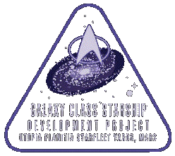

In the year 2343, the Galaxy Class Development Project was approved officially by starfleet command. A total of 12 Galaxy Class starships began construction. Six would be completed, and six would be completed to the end of Spaceframe construction. The first out of spacedock, was the USS Galaxy, the prototype ship. It was followed by the USS Yamato & USS Enterprise (NCC-1701-D). Other ships that were constructed, were the USS Odyssey, USS Venture and a few others. Two years after launch, in 2365, the USS Yamato was destroyed but a computer virus that caused its Warp Core Containment field to fail. In the year 2371, the USS Enterprise was destroyed at Veridian III by a Klingon Bird Of Prey. And not too long before that, the USS Odyssey was destroyed by the Jem'Hadar. Three Galaxy Class ships, three of Starfleet's most powerful ships were destroyed just as easily as a freighter. Something had to be done.
 On August 29, 2376, Starfleet ordered an overhaul of the Galaxy Class Development project. The quadrent's best were called in. Then, in 2377, the project was put on hold as the Dominion nearly conquered the Alpha Quadrent. In 2378, a Task Force of Federation, Romulan, Klingon, Ferengi, Breen, Tholian, Trargons and at least a dozen other races, destroyed the Dominion and Cardassia. Half of the Fleet destroyed the Dominion in the Alpha Quadrent, half destroyed the Dominion in the Gamma Quadrent. During this, the Founders' planet was destroyed. It is believed that Odo is the only changling left alive. But more may exist in hiding.
In 2381, the Galaxy Class Redevelopment Project was back in full motion. Designers and engineers spent years theorizing and designing the new ship. In 2386, the project was again halted as the Borg became a threat once more. In a borg incursion, Starfleet lost 200 ships, and they had to be replaced, so the project was put on hold again. A few years later, in 2390, the Borg mysteriously disappeared. A small Starfleet Task Force investigated and later found all borg dead from some kind of computer virus. It is still unknown as to what or who made the virus. The project was picked up again later that year, and in 2398, in a ceremony, the first 2 spaceframe sections of the USS Orion were welded together in a ceremony. As a precaution, Starfleet assigned the USS Polaris, a Gamma Class Starship, to defend the Orion's construction pod. In January of 2408, construction was completed and the computer core was activated for the first time.
By March of that year, the ship was nearly completed and the bridge module was added. It was taken out of spacedock and tested several times and exceeded all expectations. On May 2, 2408, the USS Polaris was dismissed from its duty of guarding the Orion and went on to the outer reaches of Federation Territory.
Then, on May 19, 2408, thirty-two years after the project began, the USS Orion was launched from spacedock, with Commander Jonathan Paris in command.
On its first mission, the Orion went to Warp, heading for Proxima Centauri, the closest star to Earth. Half way there, a distress call was received from the USS Polaris which was exploring the outer fringes of Federation space. USS Orion reponded immediately by entering Quantum Slip Stream (QSSD). The Orion arrived to find the Polaris badly damaged, but still containing survivors. The survivors where beamed aboard when sensors flared up with 26 ships on approach vector. The 26 ships turned out to be 25 Doomsday Machines and one Mothership. The Galaxy Class ship's weapons destroyed the smaller versions quickly, but was damaged and pulled in by the mothership. Conventional weapons had no affect, so the backup Warp Core was ejected, a deflector burst was fired and all weapons where fired at the tractor beam's source. When the core breached, the Mothership exploded sending the huge USS Orion hurtling away. After regaining control of the ship, the crew contacted Starfleet command to retrieve the Polaris and the Orion returned to Spacedock for repairs.
After being fully repaired and the known problems in the new ship were worked out, Admiral Hayes Jr. requested that the ship be rechristened as he was not present at the time it was. After Commander Paris refused, the request became an order. The crew as well as some media formed in Ten Forward and a bottle of 2370 Red Wine from the Picard Vineyards was shattered across the hull. The Orion was launched again and sent to investigate an anomoly. The ship soon ran into the infamous Q and was taunted by him. After being humilated by the crew, Q flung the ship 30,000 light years to the far end of the Beta Quadrent, where it picked up a distress signal from a close planet. The USS Orion went into to investigate and found that the planet's upper atmosphere made it impossible to transport to the surface or take a shuttle. This left one option. The senior staff reported to the Battle Bridge and the Saucer section separated and went into a higher orbit. The Stardrive entered the atmosphere and landed smoothly on the planet's surface. An Away Team consisting mainly of the Senior Officers, tracked down the distress call and found the remains of the USS Hera. While the rest of his crew dealt with Q, Commander Paris talked with Captain LaForge, to find that she and her crew had only been here 60 days. The phenomena which caused the Hera's disappearance in 2370 apparently threw them into the future and they crashed on the planet. Q began to get angry when his attempts to annoy the crew failed and he stated that he would be back. The Hera's surviving crew returned to the Orion's stardrive and it lifted off the surface. After, returning to orbit and reconnecting with the saucer, the USS Orion, spent 4 weeks in Quantum Slip Stream Flight, returning to Federation Space.
In August of 2408, the Orion was sent to investigate some electomagnetic shockwaves coming from the Kramer Nebula. After entering the nebula, the ship was encountered by a raced called the Boolean. These people claimed that the Orion had killed several of their people upon entering the nebula. The Boolean began to attack and brought several other ships. With the rising Shockwaves and constant attack, the Orion was starting to lose power. Just before abandoning ship, 5 Federation Starships, 3 Defiant Class and 2 Hyperion, entered the Nebula and destroyed the hostile Boolean ships. They towed the Orion out of the nebula and worked with the Orion crew to restore enough power to return to Spacedock. The USS Orion was put into Spacedock 4, and underwent a small refit that would work out the flaws in the design. Afterall, the Orion is a prototype. On Stardate 9810.06, the USS Orion launched again.
Shortly after launch, already enroute on its new mission, the Orion met with the Q again. As usual he had to toy with the crew. After flinging Orion into the path of Borg cubes, Dominion Warships, and several other vessels, he left as the badly battered USS Orion was towed back to Spacedock by the new USS Calypso, a Hyperion Class Starship.
After returning to Spacedock, the Federation President met up with Captain Paris and Engineer Phoenix, he yelled at both and declared that the USS Orion would be scrapped for spare parts. Captain Paris received information of his wife's 'illness' on Gamma Hydra III. He tried to convince the president to let him take a ship there, but the President denied the request. The President soon left the ship and Paris & Phoenix decided to steal the USS Orion.
Engineer Phoenix hacked into Spacedock computer and forced Spacedoors open just seconds before the ship collided with the doors. USS Enterprise-F and USS Reddwarf attempted to give pursuit but were stopped by sabotage. A few hours later, Orion managed to get to Gamma Hydra III to find a Borg Cube. Q had put the cube there as another of his 'tests'. The weakened Orion fought hard, but couldn't win, the crew evacuated to the Stardrive and separated the saucer. Soon after separation, the Saucer was remotely piloted into the Borg cube at Warp speed. Soon afterwards, the repaired USS Reddwarf entered the Gamma Hydra system. After opening fire on USS Orion's badly damaged stardrive, a Klingon Vor'cha attack Cruiser decloaked and beamed Federation President Felton into their brig for 'narcotic smuggling' in Klingon Space. Just as it cloaked, Phoenix fired a spread of torpedos which destroyed the Klingon cruiser and killed the Federation President. He beamed over to Reddwarf and towed Orion back to Gamma Hydra III where it landed.
Most of the injured crew, including Captain Paris were taken to a hosipital for treatment. After waking up, Paris' wife came in the room with a baby boy. The message was garbled, apparently she wasn't sick, she was having a child. After a week or so, the crew along with some of the shipyard workers on Gamma Hydra III began repairing USS Orion's stardrive for the journey back to Earth. Meanwhile, the Federation encountered the Killrathi who claimed Earth as their home and immediately declared war on the Federation. Three months later, USS Orion lifted off from the surface and proceeded back into space. USS Orion was escorted by USS Reddwarf. After a few days, it reached the Sol System and came under attack by a swarm of Killrathi fighters.
As soon as the battle starts, USS Hyperion and USS Aquarius arrive and begin attacking the Killrathi. Under heavy attack, USS Aquarius is disabled and explodes. Phoenix tries to buy the Orion some time and draws distracts the Killrathi as Orion speeds away at Full impulse. Three of the new Saturn Class Starships arrive and begin attacking the huge Killrathi Fleet. USS Reddwarf opens fire on USS Saturn. The three Saturn Class ships immediately bombard the weakened USS Reddwarf which explodes. Five Killrathi Capital cruisers arrive on the scene and begin firing on the outnumbered Federation ships. As the battle wages on, the Starfleet ships prepare to fall back. Just as they are about to retreat, an armada of 10 Klingon Heavy Cruisers, 5 Romulan Warbirds and 5 Sovereign Class starships enter the battle and the Killrathi start exploding everywhere. By this time, USS Orion is almost out of harm's way when a Killrathi Capital cruiser attacks it from behind. USS Wetherhold, a new Galaxy Class Refit decloaks and destroys the cruiser.
Badly damaged USS Saturn suffers Warp core damage, and collides with the last Killrathi Capital ship after her crew beams away. A Few Olympic Class medical ships arrive and begin taking on survivors. Captain Hebron of USS Saturn attempts to arrest Captain Paris as Orion's QSSD core destablizes and the ship vanishes. The ship is hurtled into 'oblivion' by the Q. After another argument, Q returns the ship to normal space and vanishes. USS Wetherhold begins towing the crippled USS Orion home. USS Orion docks with Spacedock and 20 starfleet security officers beam into Orion's bridge. The USS Orion crew is put on trial and found not guilty of all charges (with some help from the Q). USS Orion undergoes a 1 year long refit, and is released from spacedock as a Galaxy Class Refit.